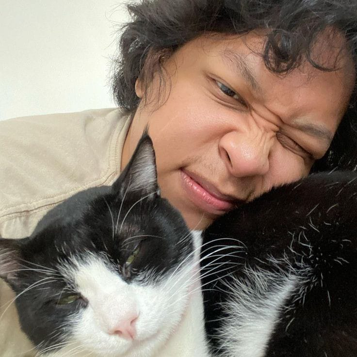

Gallery

Favorite Album (Spotify)
Album terfavorit Hindia menurut Spotify adalah [lagipula hidup akan berakhir].
Detail Awal Karir dan Kesuksesan
Hindia merupakan proyek solo dari Baskara Putra, seorang musisi asal Indonesia yang dikenal karena kreativitasnya dalam bermusik.
Berikut adalah beberapa informasi lebih lengkap mengenai Hindia:
Proyek Solo:
Hindia adalah proyek musik solo yang digawangi sepenuhnya oleh Baskara Putra. Dalam proyek ini, Baskara bertindak sebagai penulis lagu, vokalis, dan pemain instrumen.Latar Belakang:
Baskara Putra adalah musisi yang lahir dan besar di Indonesia. Ia memiliki latar belakang musik yang kuat dan telah terlibat dalam industri musik sejak beberapa tahun terakhir.Gaya Musik:
Musik Hindia sering dikategorikan sebagai indie pop atau indie folk dengan sentuhan yang introspektif dan emosional. Lagu-lagu Hindia sering menghadirkan melodi yang indah dan lirik yang mendalam.Gaya Musik:
Musik Hindia telah mendapatkan banyak penggemar dan pengikut setia di Indonesia. Kualitas musiknya dan kejujuran dalam menyampaikan pesan-pesan melalui lagu-lagunya telah membuatnya dianggap sebagai salah satu musisi indie yang paling menonjol di tanah air.